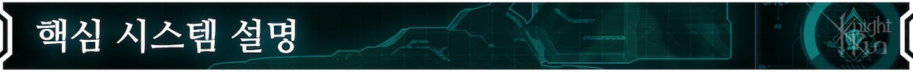
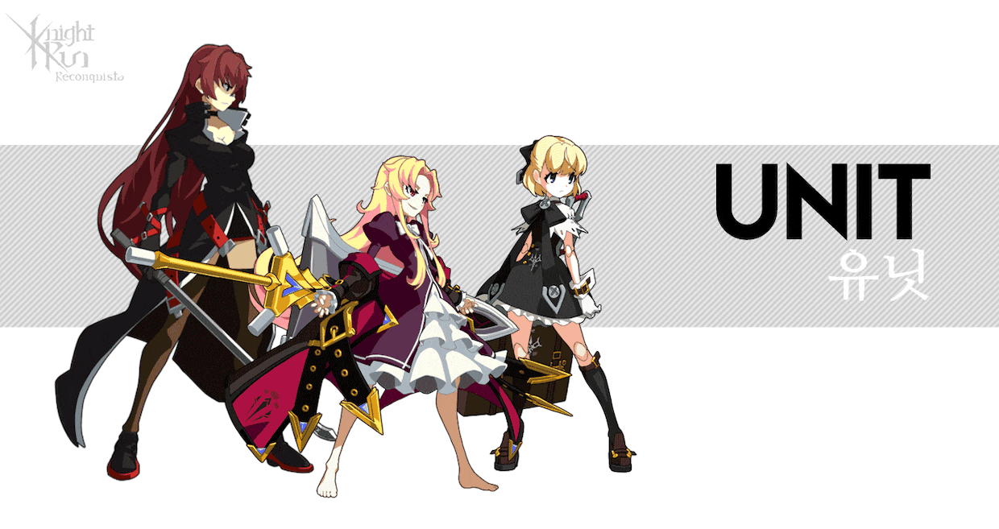
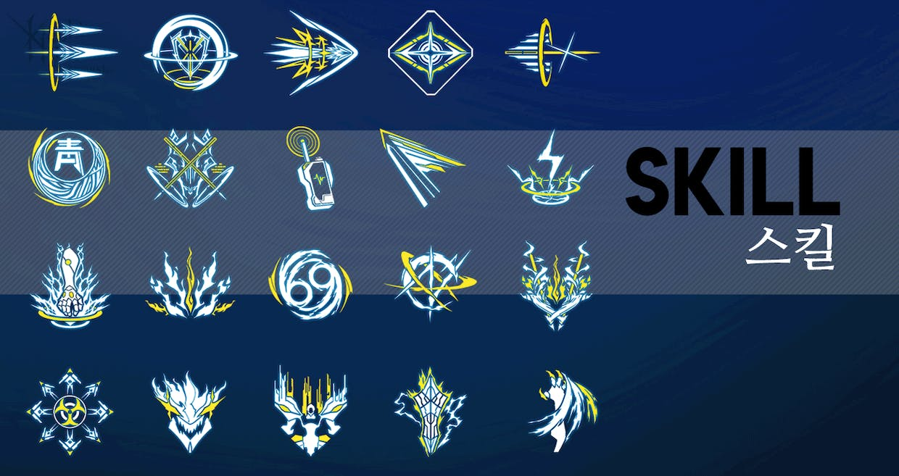
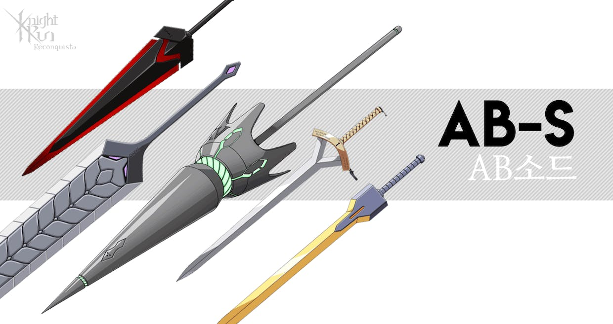
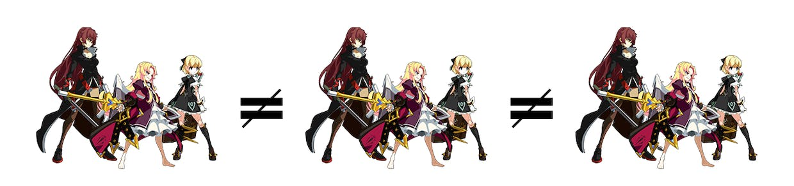
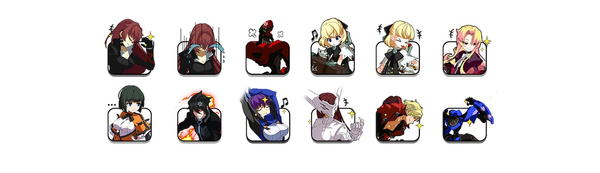
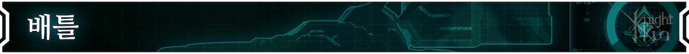

나이트런 : 레콘키스타의 전투는 크게 3가지 핵심 요소(유닛, 스킬, 무기)를 조합하는데서 시작합니다.

유닛은 게임플레이 및 '덱'구성에 가장 기본적인 요소로, 각각 고유한 패시브 스킬을 보유하고 있으며 게임 내에서 다양한 방법으로 획득할 수 있습니다.

스킬은 '유닛'에 귀속되어 있으며 한 유닛당 최소 5개를 보유하고 있습니다. 추후 지속적으로 추가되며 '스킬'의 조합에 따라 '유닛'의 특성을 다양하게 표출할 수 있습니다. 또 스킬을 중심으로한 전략적 덱구성도 가능합니다.

무기는 각기 다른 능력치를 가지고 있습니다. 그중에는 고유한 패시브를 가진 경우도 있습니다.
전투를 시작하기전 위 3가지 요소를 잘 조합하여 '덱'을 구성하여야 합니다.
각 유닛은 원작을 모티브로한 다양한 스킬을 보유하고 있습니다. 덱 구성의 시작은 다양한 유닛 중 3개의 유닛을 선택하여야 합니다.
유닛 세팅 후 해당 덱 슬롯에 AB소드(무기)를 장착하면 됩니다. 각 AB소드가 가진 특성을 잘 고려하여 히든카드나 구성한 컨셉을 더욱 강화하는 목적으로 세팅합니다. (유닛 및 AB소드는 덱 안에서 중복장착이 불가능합니다)

유닛 세팅을 완료하셨다면 다음은 스킬을 세팅할 차례입니다. 각 유닛이 보유한 다양한 스킬 중 총 8개를 선택하여 덱에 구성해야 합니다.
스킬은 얼티밋, 스페셜, 노멀로 구분되어 있으며 얼티밋은 최대 1개 스페셜은 각 1개 노멀은 제한 없이 덱에 구성이 가능합니다.
또한 한 유닛의 스킬로만 덱을 구성하거나 특정 유닛의 스킬이 포함되지 않은 조합도 가능합니다.

"방어 위주의 한방을 노리는 조합이 될 수도 있고"
"처음부터 몰아치는 초반러쉬용 조합일 수도 있으며"
"상대의 공격을 받아치는 카운터 컨셉일 수도 있음"
이러한 조합 시스템을 통해 같은 유닛의 덱 구성이라도 전혀 다른 컨셉의 도출이 가능하며 각 메타에 따라 유닛의 역할이 다양하게 변화하게 됩니다. 또 새로운 스킬의 추가로 유닛의 가능성이 더 확장될 가능성도 가지게 됩니다.

상대방과 "소통"할 수 있는 감정표현도 설정이 가능합니다.
"감정표현"의 종류에 따라 이모티콘이 움직이거나 "보이스"가 출력되는 경우도 있습니다.

덱을 설정하셨다면 이제는 실전입니다!

배틀에 진입하게 되면 가장 먼저 확인해야할 요소는 두가지 입니다.
스킬을 사용하기 위한 코스트 "노심"게이지.
그리고 현재 내 손에 쥐여진 4장의 "핸드덱" 입니다.

일정 시간마다 충전되는 "노심"출력을 사용하여 각 유닛의 스킬을 적재적소에 사용하는것이 기본이자 핵심입니다.
총 배틀시간동안 사용할 수 있는 "노심"은 한정적이기 때문에 내가 준비해온 전략을 상대방의 전략에 맞서 가장 효과적으로 사용해야 합니다.

사용 가능한 스킬을 드래그&드롭 or 직접 선택 방법으로 "대상"을 설정하면 "대기열"에 등록됩니다. 우선 등록한 스킬이 없을 경우 바로 발동합니다.

유닛의 대기열 순서가 오면 위와 같이 스킬을 사용하게 됩니다.
유닛은 고유한 공격속도에 따라 자동으로 "일반공격"을 사용합니다.
이에 따른 "일반 공격"강화스킬도 존재하며 "스킬 공격"과 분리된 판정을 가지고 있습니다.
"일반공격"과 "스킬"은 각각 별도의 "대기열"을 가지고 있으며 스킬을 사용하거나 일반공격 차례가 되었을때 먼저 등록된 순서대로 공격하거나 스킬을 사용하게 됩니다.
(단, 스킬은 일반공격보다 발동 우선순위가 더 높습니다)

위 사례처럼 상태 이상"취약"이 걸린 상대에게 "현월 적"스킬을 사용하여 더 큰 피해를 주는 등의 연계가 중요합니다. 제한시간 안에 최대한 더 많은 적을 쓰러뜨리는 쪽이 승리합니다.

후반으로 갈수록 더욱 강해지는 "에이미(A10)"의 특성과 전체 공격인 "문 버스터"의 조합은 한번 맛보면 빠져나오기 힘든 쾌감을 선사해 줍니다.

자신 및 다른 유닛을 강화하는 스킬을 가진 "레오"와 성장 포텐셜이 가장 높은 "질 맥켈런"의 조합도 이런 한방을 노릴수 있어 시너지가 상당합니다!
나이트런 : 레콘키스타에는 여러가지 다양한 스킬과 그에 따른 효과들을 가지고 있습니다. 거기에 상황판단이라는 플레이어의 센스를 결합하여 지금까지와 전혀 다른 체험을 제공하는 게임입니다.